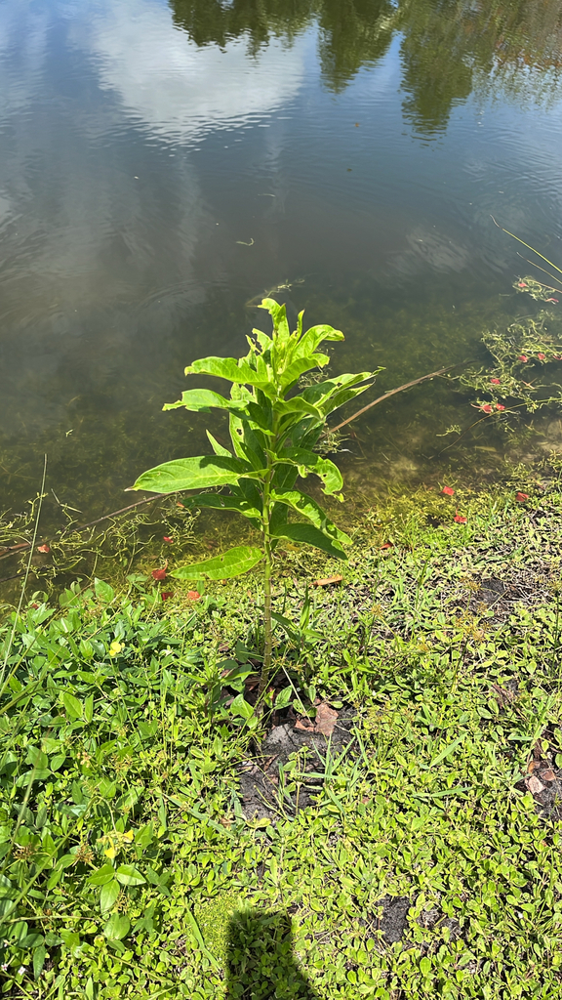

- A Florida native milkweed and a documented Monarch butterfly host plant. The caterpillars eat the leaves exclusively and sequester the toxic cardiac glycosides into their own bodies — making the adult butterflies poisonous to birds, which learn to avoid them.
- Unlike the more common Tropical Milkweed (Asclepias curassavica) that stays evergreen in Florida and can disrupt Monarch migration, Swamp Milkweed dies back seasonally — which is the correct cue that tells Monarchs to continue migrating rather than staying.
- Grows in wet soils and at pond edges — one of the few milkweeds suited to Florida's wetland habitats.
- The seed pods release silky white fiber carrying seeds on the wind.
Native to eastern North America from the Great Plains to the Atlantic Coast, including Florida. Found in marshes, wet meadows, and stream banks. Member of Apocynaceae — the dogbane family.
- Swamp Milkweed is the park's native milkweed and, like all milkweeds, a host plant for the Monarch butterfly: the caterpillars eat the leaves, take up the plant's toxic cardiac glycosides, and carry that chemical defense into adulthood, advertising it with bold orange-and-black warning colors.
- The pink to rose flower clusters are also a strong nectar source for adult Monarchs, other butterflies, and bees.
- As the name says, it likes wet feet - native to marsh edges, wet meadows, and pond margins across eastern North America, including Florida - which suits the park's pond edges. It dies back in winter and returns from the roots.
- It is the milkweed to plant for Monarchs in Florida, recommended over the widely sold non-native Tropical Milkweed, whose year-round foliage can disrupt Monarch migration and harbor a harmful parasite. Every part is toxic if eaten, and the milky sap irritates skin and eyes.
Monarch butterflies use this plant as a larval host. The caterpillars eat the foliage and sequester toxic cardiac glycosides that protect them from predation as adults. The Viceroy butterfly mimics the Monarch's warning coloration for the same protection without eating milkweed.
The flowers produce abundant nectar and attract a wide range of butterflies, bees, and other pollinators. The seed pod silk is collected by birds for nest lining.
As a native wetland plant it contributes to pond bank habitat for frogs, insects, and small wildlife.
Pink to rose-purple, in rounded clusters. The flower structure is the milkweed signature: five reflexed petals with a central crown of five nectar-bearing horns. Bloom in summer.
Upright, elongated pods. Split at maturity to release seeds attached to silky white fibers (coma).
Opposite, lance-shaped, narrower than most milkweeds. Medium green.
Upright perennial, 2 to 4 feet tall. Dies back in winter — this is normal and desirable. Regrows from roots in spring.
The pink flower clusters in summer. Milky white sap from any broken stem — the milkweed family signature. Upright elongated pods in fall. Dies back in winter — the bare stems are not dead.
Do not eat any part of this plant — all parts contain cardiac glycosides that are toxic to people and animals if swallowed. The milky sap irritates skin and eyes, so wash your hands after handling.
It's toxic to dogs and cats too (ASPCA), where it can cause vomiting, weakness, and cardiac effects. Keep pets away from the plant and its sap.
- © Franky McArthur (CC-BY-NC), via iNaturalist